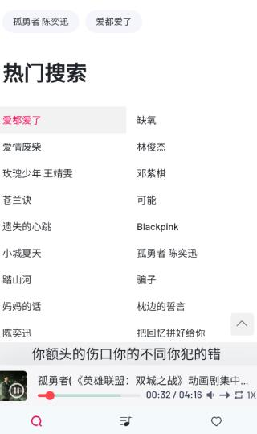

Myfreemp3 免费听歌算的到底是什么账
把一款免费音乐下载工具的使用成本掰碎了算——免费真的零成本吗？轻度用、主力用、重度用各自该花多少心思在上面，替代方案的代价又是多少，读完三秒对号入座。
开头先抛个扎心的问题：去Myfreemp3官网看一眼，这款免费听歌工具到底值不值得为它掏钱？
如果你现在打开这个工具，首页就是搜索框，搜歌、播放、下载、建歌单——全能用，没弹窗没广告没付费墙，那你心里可能在嘀咕："免费的东西，算哪门子账？" 其实免费恰恰是最需要算账的，因为它收的不是现金，是你在别处要花的时间和麻烦。这笔账不先掰清楚，用半年你会发现自己在音乐上花的心思，比当初直接掏一笔订阅费还多。
定价拆解：免费版给了什么，没给什么
先把功能边界划清楚，不然算账没基准。
从已用到的功能来看，免费版给到的东西相当完整：搜索热歌榜一搜一个准，能直接播放预览，能下载到本地存成 MP3，能自建分类列表按心情和语种分堆，设置里还有自动播放开关——开机接着放和开机静默停随你选，连Myfreemp3文档里提到的下载文件命名规则都让你定（歌名在前还是歌手在前）。图片能看到的界面还有热门搜索页和歌曲版本选择界面，意味着同一首歌可能有多个音质或来源可选。
那它没给什么？目前没看到付费版的影子，也就谈不上"免费版阉割了哪些功能"。但反过来想，一款纯免费的工具，背后一定有别的逻辑在支撑：它不向你收钱，就不会为你花钱在服务器稳定性上，搜索结果的来源会不会哪天断、下载接口会不会哪天失效、软件本身会不会因为没人维护而在新版安卓上跑不动——这些隐性成本，就是免费的代价。
换句话说，这款软件的"价格"目前是零，但它的"风险溢价"不确定。这就是算账的起点。
三类用户的账单
别搞一刀切——用的频率不同，这笔账的算法完全不一样。
轻度用户：偶尔搜首歌存一下
如果你一个月打开不超过十次，每次就搜一两首当下想听的歌存手机里当通勤背景音，那这款工具对你来说就是纯赚——零成本，免费版够你用得好好的，甚至连歌单管理那些功能都未必用得上。唯一要做的事就是偶尔检查一下下载还能不能成功、搜同样的关键词结果有没有变多或变少。
这类用户完全不用考虑付费。真要哪天它不行了，换一个同类工具的迁移成本也极低——搜完存完就走，没有歌单积累，没有使用习惯。省下来的那点时间，不值得你花一分钱去买稳定。
主力用户：每天打开、歌单攒了几十上百首
如果你每天通勤或睡前都要打开，歌单已经按心情、语种、场景分了五六个堆，下载命名规则也定好了（比如你习惯歌名在前），甚至连自动播放开关都开着——那你已经是这款工具的重度依赖者了。
这笔账要这样算：假设某天这款软件突然搜不到歌或下载失败了，你要花多久才能把歌单里的几百首歌换个地方重新攒齐？搜歌、试听、下载、整理到新的歌单里——保守估计每首歌平均要花三十秒，五百首歌就是四到五个小时的纯体力劳动。而在这四五个小时里你没法正常听歌，通勤路上没背景音、睡前没白噪音，生活质量直线下降。
如果有一天它真的推出付费版，比如每月五块或买断二十块，你只需要问自己一个问题：这五块钱，买的是不是我不想那四五个小时白费？ 答案大概率是肯定的。主力用户的迁移成本已经足够高，值得为稳定付一笔小钱。

重度用户：离线歌单是整个精神世界
如果你手机里存了上千首歌，按歌手、专辑、场景建了十几个文件夹，连歌词文件都跟音频配对好，换个播放器都嫌麻烦——那你根本不需要算账，闭眼付就是。
你的整个音乐生活已经和这款工具深度绑定了：命名规则一旦改回去，之前下的歌和歌词配对就乱了；歌单结构不是随便换个工具就能还原的；甚至你对搜索结果的排序、对音质的偏好，都是在这款工具上培养出来的。它对你来说已经不是一个工具，而是一个小型的音乐管理系统。只要付费的价格在你月收入的千分之一以内，这笔钱的性价比高到离谱——你买的不是一个App，是整个不用迁移的生活。
替代方案：不付这笔钱，还有什么路
当然，你也可以选择不付费，但得先搞清楚替代方案各自的代价。
最直接的替代是换同类免费工具。市面上免费音乐下载工具不少，但每个都有自己的不稳定周期——今天你用 A 明天 A 挂了，又换 B，B 可能界面是俄语的，C 可能只支持旧版安卓。你每换一次，都要重新适应界面、重新搜歌、重建歌单，而这些时间成本累计起来，可能已经超过了一笔年度订阅费。
另一条路是"降低使用频率"——别每天打开，改成一周搜一次新歌，平时就听之前下载好的。这个方案的好处是你基本脱离了对工具的依赖，但坏处是新歌更新慢，歌单容易陈旧，本质上是用"牺牲听歌体验"来换"不折腾"。如果你对新歌敏感度不高，这倒也是个可行选项。
还有一条路是花时间折腾更重的方案——比如搭一个自己的音乐库、用浏览器脚本去主流平台扒歌、或者直接买几个平台的会员。搭库太折腾不适合大多数人，脚本方案随时会被平台风控封，买会员反而可能比给单个工具付费更贵（多平台叠加的话）。
算下来，没有完美的替代方案——每一条路都要花时间、花心思、或者同时花两者。Myfreemp3 现在免费给了你一条最省力的路，你之所以还在犹豫要不要付费，本质上是在赌"它还能免费多久"。

结论：三秒对号入座
最后给一张可执行的对照表，你对着自己的使用习惯一看就知道该怎么选：
| 你是哪类用户 | 要不要为 Myfreemp3 付费 | 原因 |
|---|---|---|
| 轻度用、偶尔搜一两首 | 永远不用 | 迁移成本为零，免费版完全够 |
| 主力用、每天打开、歌单有几十上百首 | 等它真收费再付——如果价格在月均五块以内 | 迁移成本已经攒够了，付一笔换省心 |
| 重度用、歌单上百上千首、音乐就是精神食粮 | 只要它敢出付费版就闭眼付 | 你买的是整个不用迁移的生活 |
| 正在犹豫要不要投入主力 | 先别急着攒大量歌单 | 等它证明自己能稳定跑半年再深度绑定 |
补一句：目前它还完全免费，上面这些都是"万一它收费"的预案。但免费工具的另一个逻辑是——能用多久不取决于你，取决于维护它的人。别等它突然不能用了才想起自己有多少迁移成本，提前心里有数，就不会慌。